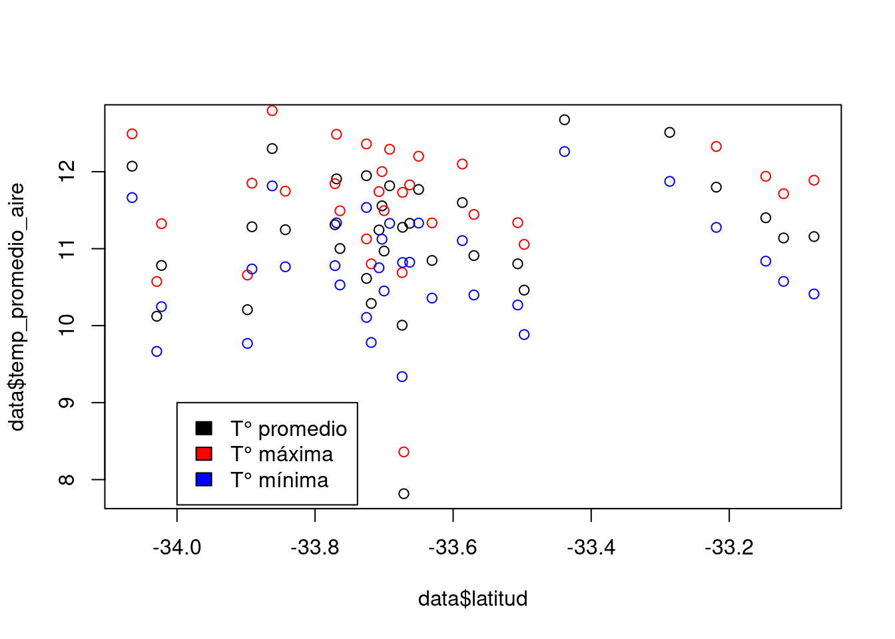
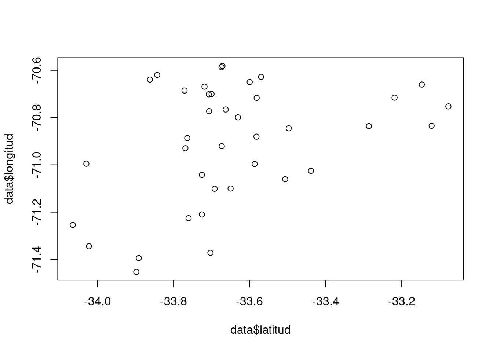

x <- 5
x < 3[1] FALSESIG Avanzado (IMSE1017)
¿Cuál es la diferencia entre R y RStudio?
R: R es el lenguaje de programación y RStudio es la IDE o interfaz gráfica que facilita el trabajar con R.
¿Cuáles son los tres tipos de datos básicos en R?
R: vector numérico, carácter y lógico.
Los argumentos de una función en R van entre paréntesis cuadrados [ ].
El operador de asignación para un objeto en R es <-.
El resultado de la operación FALSE + 2 es 2
El resultado de la siguiente operación
x <- 5
x < 3[1] FALSEc(TRUE, FALSE, 10, 20)entrega como resultado un objeto de tipo:
class(c(TRUE, FALSE, 10, 20))[1] "numeric"c(0, TRUE, 'a')entrega como resultado un objeto de tipo:
class(c(0, TRUE, 'a'))[1] "character"20:10 [1] 20 19 18 17 16 15 14 13 12 11 10¿Cuál es la diferencia entre un objeto obtenido con la función as.Date() y as.POSIXct()?
R: la función as.Date devuleve un objeto de tipo fecha y as.POSIXct devuleve un objeto con fecha y hora.
¿Cuál es la diferencia entre un vector atómico y uno de tipo lista?
R: El vector atómico es homogéneo, es decir contener la misma clase de objetos. El vector de tipo lista es heterogéneo, es decir puede contener diferentes clases de objetos.
¿Cuáles son los tipos de datos derivados en R?
R: Factor, NAs, date-time
Considere la siguiente matriz en R
set.seed(432)
(m <- matrix(round(runif(25,0,100)),nrow = 5)) [,1] [,2] [,3] [,4] [,5]
[1,] 26 94 65 71 49
[2,] 4 74 73 47 66
[3,] 92 24 25 70 61
[4,] 17 68 62 43 60
[5,] 73 95 31 94 2413.1. ¿Que resultado se obtendrá al ejecutar en R lo siguiente ? ¿A qué tipo de objeto corresponde el resultado?
m[1:2,4:5] [,1] [,2]
[1,] 71 49
[2,] 47 66class(m[1:2,4:5])[1] "matrix" "array" 13.2. ¿Que tipo de objeto se obtendra como resultado al ejecutar en R lo siguiente? ¿Qué valores se obtienen como resultado?
m[,4, drop = FALSE] [,1]
[1,] 71
[2,] 47
[3,] 70
[4,] 43
[5,] 94class(m[,4, drop = FALSE])[1] "matrix" "array" Las matrices en R pueden tener nombres de filas y columnas.
R: Verdadero
Considere el siguiente objeto de tipo data.frame
(ir <- iris[sample(1:150,5),]) Sepal.Length Sepal.Width Petal.Length Petal.Width Species
17 5.4 3.9 1.3 0.4 setosa
134 6.3 2.8 5.1 1.5 virginica
111 6.5 3.2 5.1 2.0 virginica
150 5.9 3.0 5.1 1.8 virginica
28 5.2 3.5 1.5 0.2 setosa15.1. ¿Qué da como resultado la siguiente operación en R?
ir$Sepal.Width[1] 3.9 2.8 3.2 3.0 3.515.2. ¿Cuál es el resultado de la siguiente operación en R?
ir['Species'] Species
17 setosa
134 virginica
111 virginica
150 virginica
28 setosa15.3. ¿Cuál es el resultado de la siguiente operación en R?
ir[2:3,4:5] Petal.Width Species
134 1.5 virginica
111 2.0 virginica1:10 + c(1,3,5)Warning in 1:10 + c(1, 3, 5): longer object length is not a multiple of shorter
object length [1] 2 5 8 5 8 11 8 11 14 11R: Se le llama reciclado de vectores, generá un warning ya que R al vector que tiene menor cantidad de elementos lo completa hasta alcanzar la cantidad de elementos del mayor. Para completar va repitiendo los valores, en este caso el segundo vector que tiene tres elementos lo completa hasta tener 10 elementos. Cómo 3 no es multiplo de 10, en este caso, R da un warning.
¿En SIG cuál es la diferencia entre tipo de datos vectorial y tipo de datos raster?
R: Los tipos de datos vectoriales sirven para representar fenomenos discretos, están compuestos por puntos, lineas y polígonos. Los datos raster sirvern para representar de mejor forma fenómenos continuos, están compuesto de celdas/pixeles.
Para trabajar con datos vectorial en R podemos utilizar el paquete {fs}.
R: FALSO, el paquete es {sf}
¿Que tipo de estructuras de datos utiliza el paquete de R simple feature para representar los objetos espaciales en R?
R: Utiliza los objetos sf los que están compuestos de un data.frame y un objeto sfc que corresponde a la list-column que almacena las geometrías espaciales. Cada geometría individual corresponde a un objeto sfg.
Respecto a los objetos de datos espaciales. ¿Cuál es la diferencia entre un objeto sfc y sfg?
R: El objeto sfc corresponde a un list-column que almacena todas las geometrías del objeto sf. Los sfg corresponde a las geometría individuales o entidades espaciales.
Debe descargar los datos “data_mensual.csv” que se encuentra en el campus virtual.
Luego debe crear un script en R usando RStudio, que permita realizar lo siguiente:
data <- read.csv2('../data/data_mensual.csv')class(data)[1] "data.frame"str(data)'data.frame': 38 obs. of 9 variables:
$ station_id : int 39 40 41 42 43 44 45 46 47 48 ...
$ latitud : num -33.7 -33.1 -33.1 -33.7 -33.7 ...
$ longitud : num -71.4 -70.8 -70.8 -70.6 -70.7 ...
$ nombre_ema : chr "San Diego" "HUECHÚN EX Lampa" "Til til" "Pirque" ...
$ region : chr "Metropolitana" "Metropolitana" "Metropolitana" "Metropolitana" ...
$ comuna : chr "Melipilla" "Tiltil" "Tiltil" "Pirque" ...
$ temp_promedio_aire: num 11.6 11.2 11.1 10 11.2 ...
$ temp_minima : num 11.12 10.41 10.57 9.34 10.75 ...
$ temp_maxima : num 12 11.9 11.7 10.7 11.7 ...nrow(data)[1] 38ncol(data)[1] 9names(data)[1] "station_id" "latitud" "longitud"
[4] "nombre_ema" "region" "comuna"
[7] "temp_promedio_aire" "temp_minima" "temp_maxima" mean(data$temp_promedio_aire)[1] NAmean(data$temp_minima)[1] NAmean(data$temp_maxima)[1] NAdata$comuna <- as.factor(data$comuna)data_sel <- data[data$region == 'Valparaíso',]nrow(data_sel)[1] 0plot(data$latitud,data$temp_promedio_aire)
points(data$latitud,data$temp_maxima,col = 'red')
points(data$latitud,data$temp_minima,col = 'blue')
legend(-34, 9, legend=c("T° promedio", "T° máxima","T° mínima"),fill = c("black", "red","blue"))
plot(data$latitud,data$longitud)
data_guardar <- data[data$region == 'Metropolitana',c("latitud", "longitud", "region", "comuna")]
write.csv2(data_guardar,'../data/temp_promedio_mensual_metropolitana.csv')